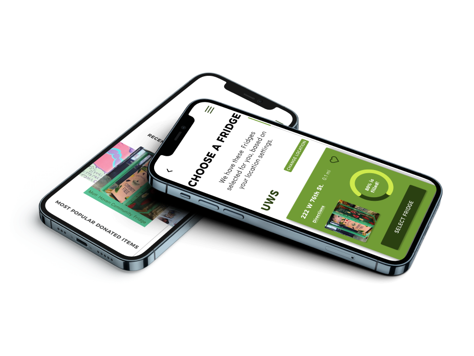

NYC COMMUNITY
FRIDGES
There are many great locations and fridges set up to serve the NYC Community! Our team worked on creating a mobile app to help eliminate food insecurity through easy to access refrigerator drop points filled by and supported through community members.

ORIGINAL WEBSITE
nycfridge.com
01
Overview
THE PROBLEM
THE SOLUTION
Current website has limited information
Current website has limited information
People are not aware of how to use them, or that they even exist
No clear organized system for donating, cleaning and utilizing fridge contents as a recipient
All this is affecting community engagement
02
USER RESEARCH
We wanted to understand how our users habits and needs reflect the food donation space
RESEARCH OBJECTIVES
- Understand the users donation habits and comfortability with making donations
- Gain insight as to what affects their decision of how frequently to donate
- Understand the relationship that technology plays in regards to donating
PROTO-PERSONA
Donor
Paul, 32, Graphic Designer from Brooklyn.
Active community member engaged in building and maintenance of community programs
PAIN POINTS:
- No developed technology to support his community
- Fridge is messy and some of the food is spoiled
GOALS AND NEEDS:
Assurance of fridge space when people spend the time traveling to donate
Recipient
Anna, 50 year old Brooklyn resident unemployed due to COVID-19 with a dairy allergy.
Recently needs help since finances are tight for groceries.
PAIN POINTS:
- Identifying what is available in fridge/food allergens
- Fridge is too disorganized
GOALS AND NEEDS:
Assurance of food contents to safely decide which meals to collect